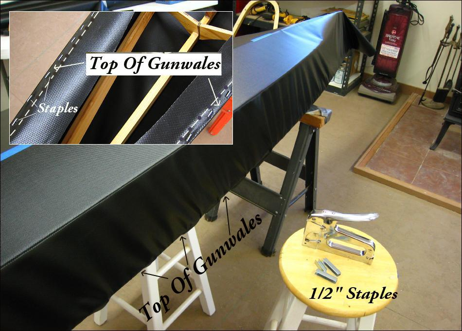

| PVC Skinning (Hull) | Menu Previous Page Next Page |
|

Begin stapling the skin to the top of the gunwales at the hull center. Initially, staple every 12" while moving towards the ends. After 2-3 staples, move to the other side and duplicate the spacing. Pull the skin tight while stapling. Always pull the skin straight down, and not on an angle. After reaching about a foot from the stems, go back over the stapled area with 6" spacing between staples, and then 3" spacing being sure to pull the skin tight as you move along the hull. Later, after the hull is turned over, continue to staple until there is approximately 1" between staples. On the 13' 6" Sea Bee, you will use approximately 300 staples. A glued PVC skin has the advantage of requiring no coating and no sewing. However, PVC's 2 side vinyl coating combined with the woven polyester core material is fairly stiff. This makes it difficult to eliminate all wrinkes during the skinning process. Those remaing will be quite shallow. it's possible to isolate wrinkles into seperate areas while stapling, cut them out, and patch the areas. I have chosen not to do so on the Sea Bee.
|
|